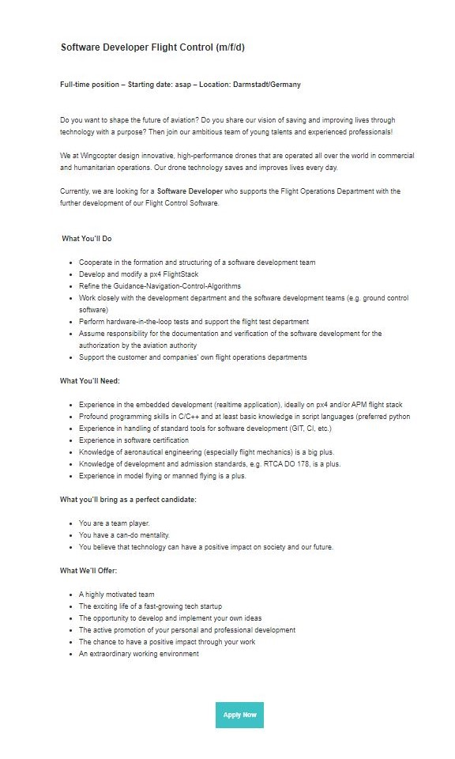

The fruits of IT have always been around me, glinting curiosities ever present from my childhood days of tampering with the hardware of gaming consoles to perform an array of glitches inside of the games I was playing.
In hindsight, a germinal moment was the genesis of the iPhone. Seeing my uncle with an iPhone and its innovative features was akin to witnessing magic. As time marched forward the notion of magic transitionally phased-out, replaced by a grasp and an appreciation for the genius that follows pooling together teams with exemplary skillsets to collaborate to produce ‘magic’. I’d wish to be part of a team that contributes to a new technology that produces a similar feeling to what I had felt in 2007.
Aside from being reputable, I chose to study with RMIT because they were offering what I was searching for, two units to act as a stepping stone into a software engineering degree. During the coming months I expect to have gained basic bread and butter knowledge in foundational concepts comprising IT. More importantly I anticipate a personal growth in confidence when working with teams and utilizing essential global collaborative services like GitHub.
Software Developer - Flight Control - (WINGCOPTER)

Acknowledged as one of the technology pioneers for 2020 by the World Economic Forum, Wingcopter is a newly hatched aviation company aiming solve the logistical challenges faced when delivering medicine to rural 3rd world villages. The position would conveniently relocate me to Germany, where I will be a part of a diverse tight knit team all sharing identical fervour.
The job itself will consist of writing and modifying flight control software, developing solutions for autonomous flying with the help of open sourced PX4 autopilot systems.
Frequent comprehensive liaising between the UI and drone development team will be expected to ensure deliverance of a supreme product.
Proving candid for the role will require fluency and experience with C++ and python, as the two are commonly used for programming autonomous vehicles. Having a backed history of working on related projects that involve PX4 autopilot.
Changes made to the software will need to be made immediately available for the rest of the team; therefore competency using GitHub is a must. Applicants equipped with knowledge of aeronautical engineering, flight mechanics and or have practiced model/ manned flying will be deemed as favourable assets for the company, as they’ll have an edge when adequately communicating with the hardware development team.
With no relevant technical skills, I am at ground floor ready to construct a tower of expertise.
The hoops i'll jump through to achieve the position are as follows.
1. Complete the 2 RMIT units with a weighted score ≥ 80%
2. Use these results for access into undertaking a 4 year course studying software engineering, developing abilities and acquiring the credential
3. Alongside studying, take up related projects in spare time that involve tinkering with Model flying, robotics, APM flight stack, C++ and Python
4. Enrol and complete an aeronautical engineering short course
5. Get an employment visa so I’m eligible to work in Germany
6. Build a website/CV that ornately showcases related desirable abilities.
7. Apply.
Myres Briggs
Personality Type: INTJ-A
LifeTrain Learning Styles Quiz
Pragmatist style: 0.3 / 10
Theorist Style: 0.3 / 10
Reflector Style: 0.3 / 10
Activist Style: 0.1 / 10
Big 5 Personality Test
Ranked higher than x percent compared to everyone else whom took the test.
Extroversion: 37%
Emotional Stability: 74%
Agreeableness: 17%
Conscientiousness: 67%
Intellect/ Imagination: 37%
Although the validity of the Myres Briggs test is heavily debated, I’ve undergone the test on 3 seperate occasions over the past 2 years with no variation in output.
One too cannot refute the presence of personal biases when completing the test, botched results are probable in that regard.
Personally I have found the test assists me by lending a scope to observe my personality from a 3rd person perspective, opening a window of opportunity to personal improvements that otherwise would have been overlooked by obliviousness or stubbornness. I’m in accordance with everything it describes, preferring working alone and or in small groups with likeminded personalities who don’t waste time with menial tasks or argue with the truth. Knowing the personalities that comprise other groups and their level of compatibility that runs parallel to the INJT-A will partially determine what I repel away from or gravitate towards, ultimately I’d look for disciplined easy going individuals.
The supplementary results derived from the learning styles quiz display an even score across 3 of the 4 categories with ‘pragmatic’, ‘reflector’ and ‘theorist’ each yielding %30 arguing that I value discussion, theory and practice proportionally. The remaining %10 allocated to ‘Activist’, detailing lesser favourability to time consuming group discussions and role-play.
Finally the big 5 personality metrics are to be considered with an iota of sodium chloride if not at all, the questionnaire possessed shallow depth (haha yes I know, typical for someone with low agreeableness to disagree!).
Overview
‘Remy’ is an internet browser extension plugin that keeps a log of your pantry and assists with discovering food recipes and suggesting ingredients based on what you have at your disposal in your kitchen.
Motivation
Victorians are throwing out 250,000 tonnes of food annually with a large portion of that figure being edible food! The average Victorian household bins $2136 in food waste a year, that’s $42 a week or $21360 spanned over a decade!
Additionally, whatever mental energy that hasn’t been wrung out of my brain after an enduring day usually stands no chance in deciding what to cook.
On top of that, I couldn’t even tell you what I have in the fridge, and if I do remember something, chances are it’s almost off. This plugin is a proposed solution to rescue money and time.
Description
Remy is the finest, most well-mannered, web crawling, digital arachnid assistant chef you’ll ever meet.
The user will download and install the browser extension.
Once installed the user will click on the icon and be prompted to create a “ + new pantry”.
Once a new pantry is established, a small window will proceed to display categories of food types.
E.g.
Meats, Dairy, Fruit, Vegetable, Herb, Spice.
Ordered alphabetically under each category will be the foods that belong to the corresponding group.
E.g.
Fruit
Apricot _
Apple _
Banana _
Cantaloupe _
Users will tick off what food they currently have.
Fruit
Apricot _
Apple ☑
Banana ☑
Cantaloupe _
Inputs will be automatically saved as they click through.Once filling out is complete, the window can be minimized and Remy will remain active behind the scenes scouring cooking websites, scanning for recipes with high matches of corresponding ingredients.
If a user on their own accord were to visit a webpage that featured a recipe, Remy would automatically scan for ingredient matches and return the results.
Unmatched ingredients would be highlighted with the added option to add them into a separate “grocery list” log. Ingredients can also be added manually into the list.
The grocery list can then in turn be used on your online supermarket of choice, where it will autonomously fill your online shopping cart for you, removing the need to manually input items yourself. A brief review of the shopping cart and you’ve sent your order which can be later be collected or delivered to your residence.
Recipes that you’ve made or saved can be bookmarked and rated with the option to annotate (what worked, what didn’t).
Over time you’ll be recommended recipes tailored to your taste based on what meals you have previously cooked and relished.
Tools and Technologies
We’ll use chrome as the example.
Chrome extensions are written utilizing three languages;
HTML, CSS, and JavaScript.
A spider/ web crawler will be used to collect matching keywords from ingredient sections of a recipes webpage, these spiders are usually written in Python. Facilitating Python in JavaScript is made possible using a Python to JavaScript compiler known as (Rapydscript).
A web API will be built to fulfil the function of autonomously filling the shopping cart with items that are in the “grocery list”.
Rapydscript is called upon once more for machine learning, algorithms used to suggest recipes.
HTML and CSS will be written to make the UI friendly and intuitive.
Skills Required
To reiterate Tools and Technologies, the prerequisite knowledge to materialize this concept, is being able to construct and assemble these functions using the languages on offer.
Knowing how to program a WebCrawler that targets specific websites with Python. Compiling that Python code to JavaScript with Rapydscript.
How does a spider automatically identify the ingredients section of a webpage?
HTML / CSS expertise for an intuitive front end experience.
Outcome
If this project were to become successful, the end user will enjoy a banquet of benefits at the hands of an intuitive application coupled with autonomy and machine learning. The key subject but not limited to…
-Reduced decision fatigue on deciding what to cook for dinner.
-Money saved from preventing food going off or being thrown out.
-Conserved time for the end user through automated processes.
-Compounding culinary knowledge through diverse yet well-tailored recipe recommendation.